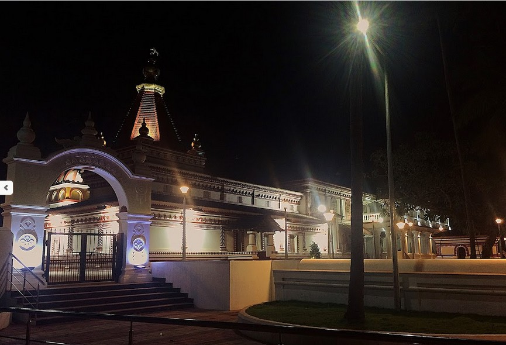

Morning: 6:00 AM – 12:00 PM
Evening: 4:00 PM – 9:00 PM
सकाळ: सकाळी ६:०० – दुपारी १२:००
सायंकाळ: दुपारी ४:०० – रात्री
९:००
Nestled at the serene confluence of the Chapora River and the Arabian Sea, the Shri Morjai Devasthan stands as the spiritual heart of Morjim village in Pernem, North Goa. This ancient temple is dedicated to Goddess Morjai — a fierce and benevolent deity revered across generations by the people of Morjim.
चापोरा नदी आणि अरबी समुद्राच्या शांत संगमावर वसलेले, श्री मोरजाई देवस्थान उत्तर गोव्याच्या पेडणे तालुक्यातील मोर्जिम गावाचे आध्यात्मिक केंद्र आहे. हे प्राचीन मंदिर देवी मोरजाईला समर्पित आहे — एक तेजस्वी आणि कल्याणकारी देवता जी पिढ्यानपिढ्या मोर्जिमच्या लोकांनी पूजनीय मानली आहे.
The land of Morjim — once known as Mayurgram, the land of peacocks — carries a legend as deep as the tides. The temple not only anchors the community's faith but also witnesses vibrant festivals that have been celebrated for centuries.
मोर्जिमची भूमी — एकेकाळी मयूरग्राम म्हणून ओळखली जाणारी, मोराची भूमी — एक खोल आख्यायिका बाळगते. हे मंदिर केवळ समाजाच्या श्रद्धेचे आधार नाही, तर शतकानुशतके साजऱ्या होणाऱ्या उत्साही उत्सवांचेही साक्षीदार आहे.
